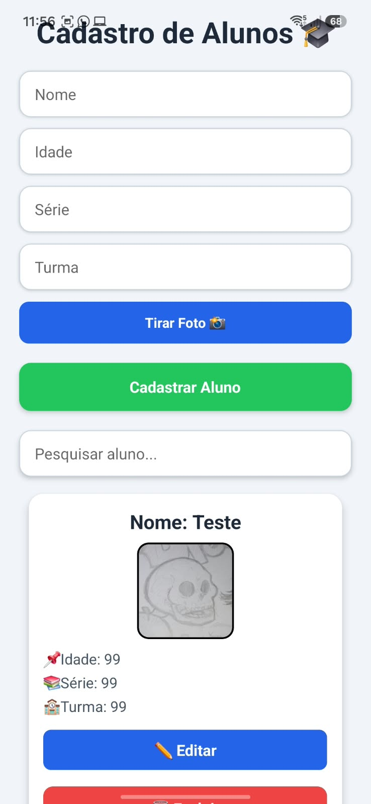
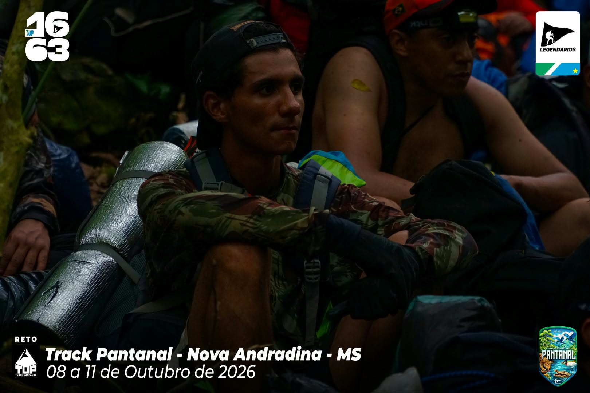
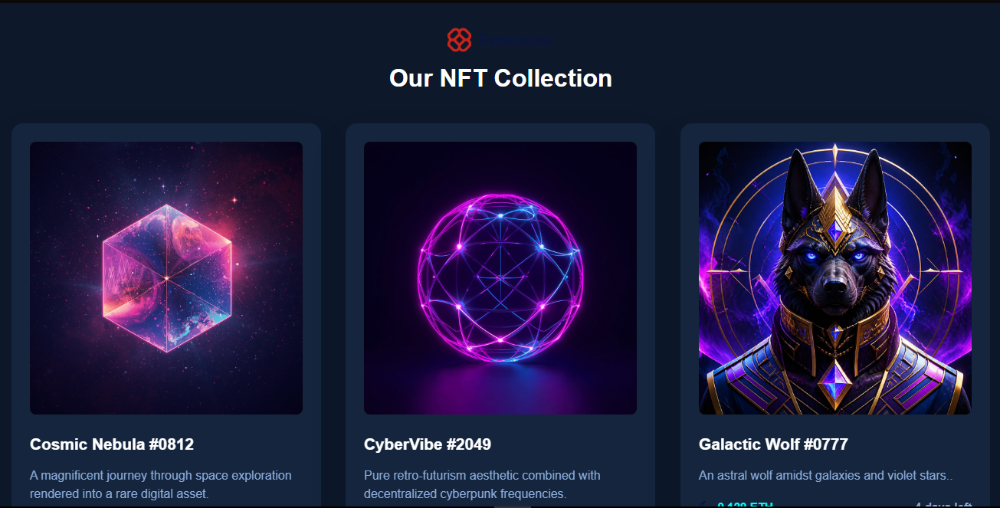
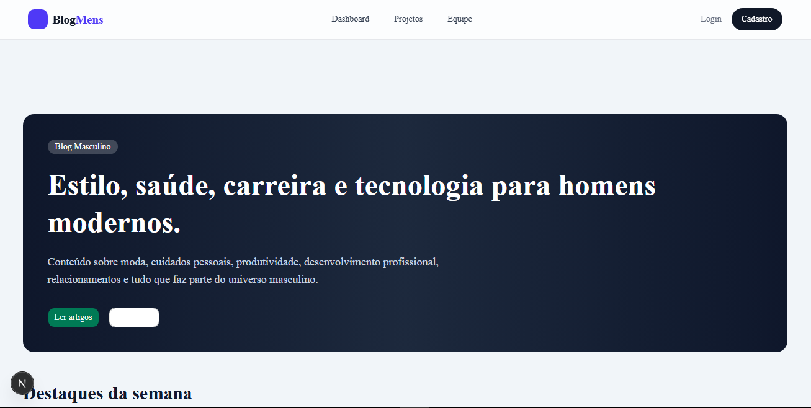

Cadastro de Alunos
Projeto web desenvolvido para cadastrar alunos, de uma forma eficiente e fácil. Somente para dispositivos móveis.
StyleSheet · JavaScript · React · SQlite
Ver código no GitHubPORTFÓLIO PESSOAL E ACADÊMICO
Aqui compartilho minha trajetória, meus projetos, minhas experiências acadêmicas e meu aprendizado na área da tecnologia.
Ver meus projetos Entrar em contato
Sou estudante de Técnico Integrado em Informática no Instituto Federal de Mato Grosso do Sul. Tenho interesse em desenvolvimento web, tecnologia e criação de projetos acadêmicos.
Alguns trabalhos que desenvolvi até agora no IFMS.

Projeto web desenvolvido para cadastrar alunos, de uma forma eficiente e fácil. Somente para dispositivos móveis.
StyleSheet · JavaScript · React · SQlite
Ver código no GitHub
Projeto web de uma loja de NFTs criadas por inteligência artificial.
HTML · JavaScript · CSS
Ver código no GitHub
Projeto web de um blog, onde homens compartilham publicacões.
HTML · JavaScript · CSS
Ver código no GitHub2025
.jpeg)
.jpeg)
.jpeg)
Apresentei um projeto como bolsista. Um projeto onde um jogo era feito do zero, um jogo de cartas envolvendo diversos personagens importantes para a vida real, como por exemplo, Karl Marx. Diversos personagens socialmente importantes e impactantes.
Projeto do qual convalidei como TCC.
2024–2026
Realizo o curso de técnico informática no Instituto Federal do Mato Grosso do Sul, e desenvolvi diversos conhecimentos sobre HTML, CSS, JavaScript e GitHub. Além das matérias comuns de um ensino médio sem técnico integrado.
Algumas tecnologias e ferramentas que estudo e utilizo.